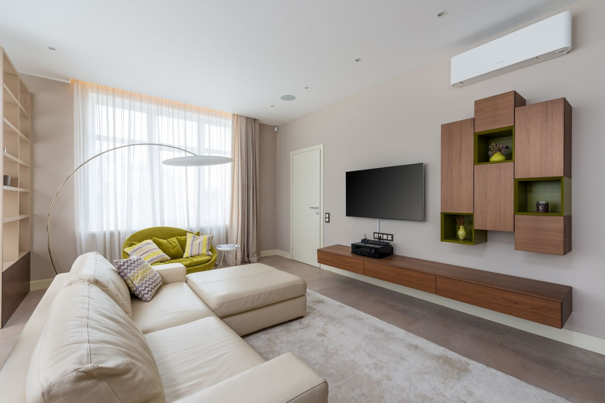
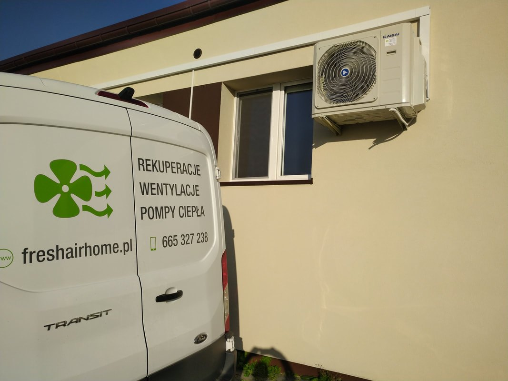
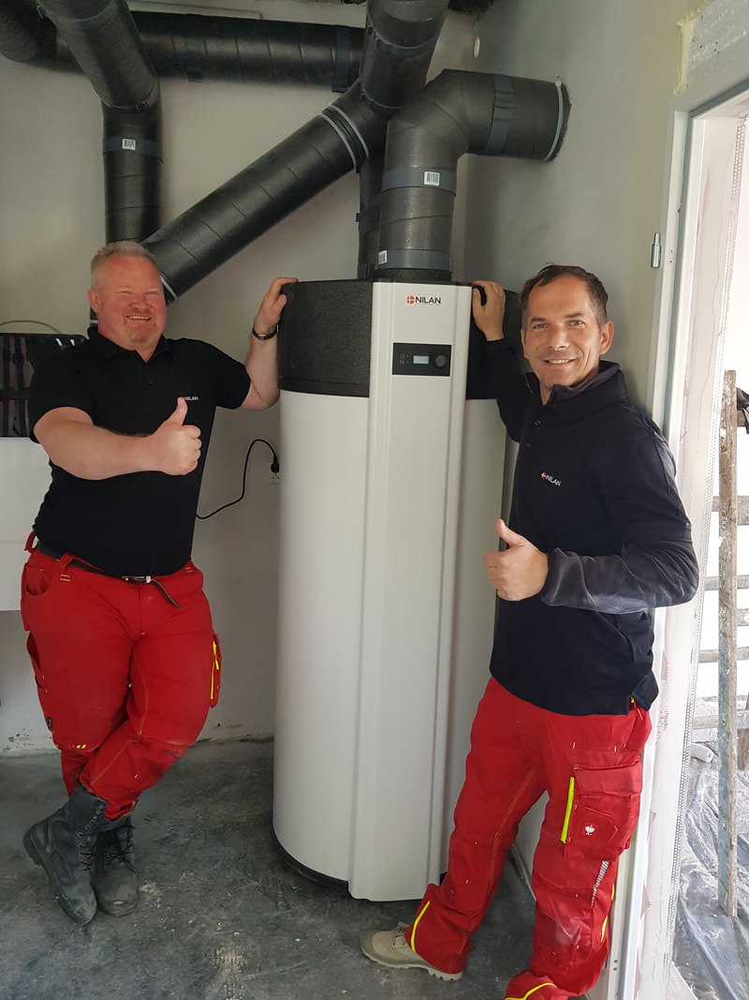
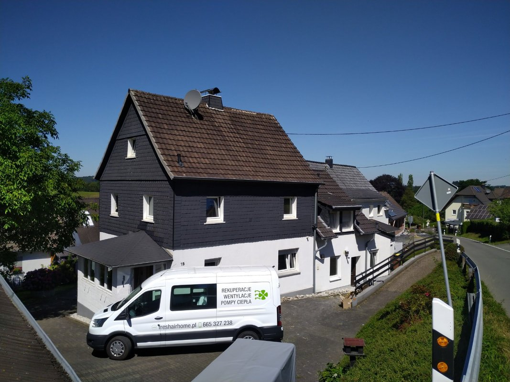
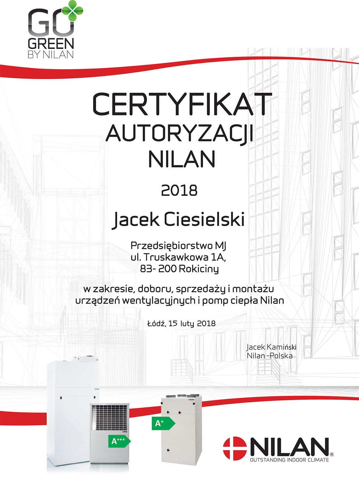
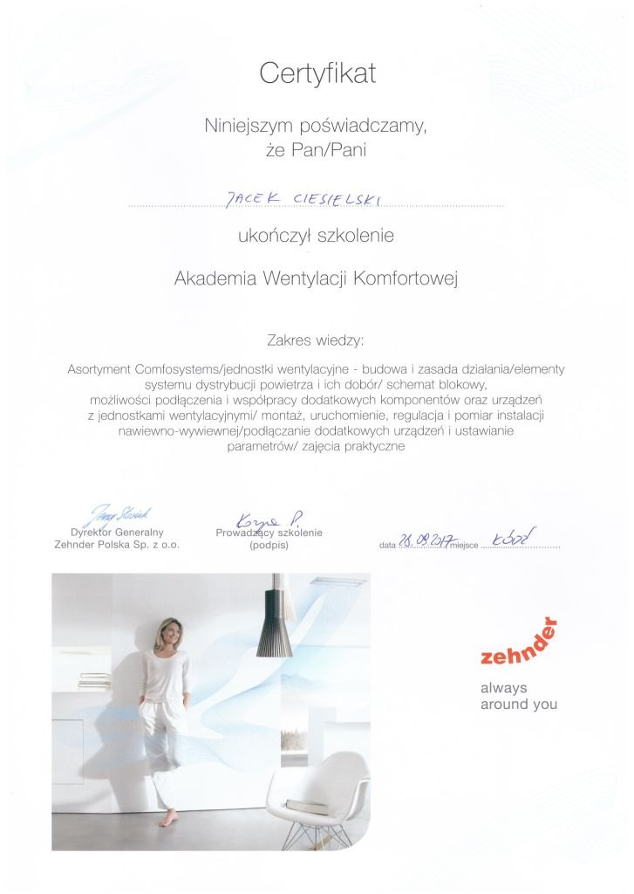
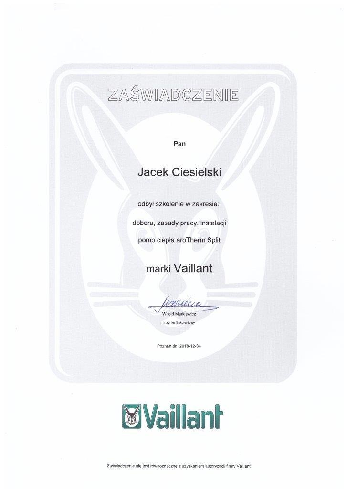
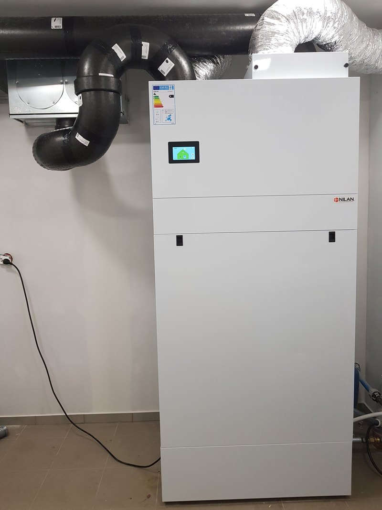

Wentylacja mechaniczna, rekuperacja, gruntowe wymienniki ciepła, klimatyzacja i pompy ciepła. Robimy to na co dzień, w domach jednorodzinnych, u firm i w budynkach publicznych.

Siedziba mieści się w Rokocinie pod Starogardem Gdańskim. Wentylacja to nasza jedyna specjalizacja, nie dodatek do hydrauliki czy elektryki. Dzięki temu dobór centrali, prowadzenie kanałów i regulacja układu to dla nas codzienna robota, a nie temat, który sprawdzamy w katalogu przy okazji zlecenia.
Pracujemy na Pomorzu, najczęściej w Starogardzie Gdańskim, Tczewie, Gdańsku i okolicach. Przy większych instalacjach jeździmy po całej Polsce.
Nie są to hasła na stronę. Tak wygląda nasza robota od pierwszego telefonu do przeglądu po sezonie.
Wydajność centrali wynika z metrażu, liczby pomieszczeń i wymaganego strumienia powietrza. Nigdy z tego, co akurat jest w magazynie.
Jeśli w gotowym domu kanał wyszedłby na wierzch albo centrala nie zmieści się w kotłowni, słyszysz to od razu, a nie w trakcie montażu.
Ustalamy termin z resztą ekip, żeby kanały poszły przed tynkami, a jednostki po wykończeniu. Nikt nikomu nie rozbija harmonogramu.
Filtry, przeglądy, regulacja układu w kolejnych sezonach. Instalacja wentylacyjna ma pracować tak samo dobrze po pięciu latach.
Ta sama ekipa, która wycenia, robi montaż i wraca na przegląd. Nie przekazujemy roboty dalej.


Papiery, które stoją za tym, co montujemy. Kliknij w dokument, żeby go powiększyć.




Zehnder, Nilan, Thessla Green, Paul, Ostberg, Frapol, Brink. To centrale, do których są części, filtry i wsparcie producenta również za kilka lat. Przy doborze patrzymy na sprawność odzysku, pobór prądu wentylatorów i poziom hałasu, bo z tym klient żyje na co dzień.
Jeśli masz już wybrane urządzenie albo dostałeś je w pakiecie z domem, montujemy je i mówimy wprost, czy pasuje do budynku.
Pełny zakres prac →Dalsze wyjazdy ustalamy telefonicznie. Przy większych instalacjach dojazd zwykle nie jest problemem.
Opisz budynek i etap prac, a my powiemy, co da się zrobić i ile to kosztuje.